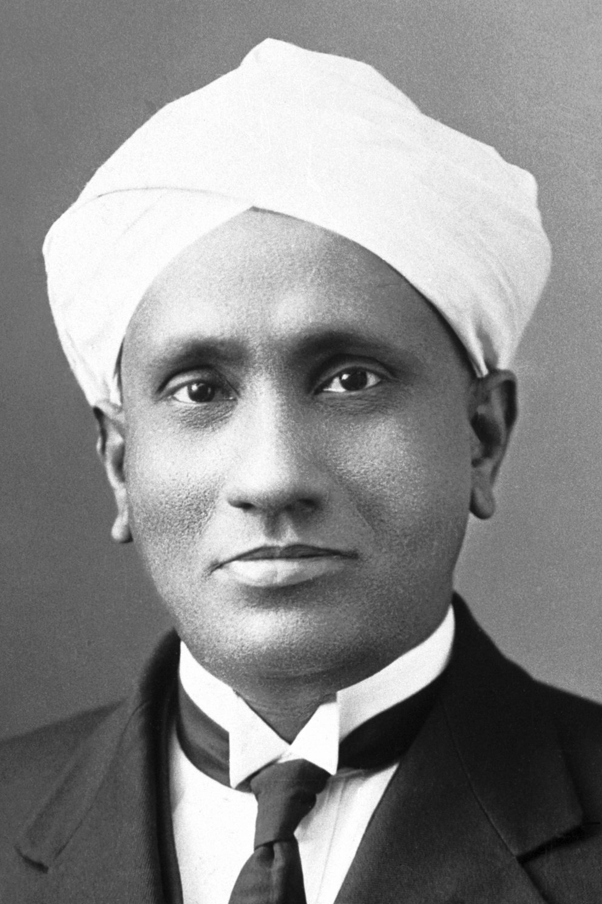

Sir Chandrasekhara Venkata Raman
The essence of science is independent thinking, hard work, and not equipment. When I got my Nobel Prize, I had spent hardly 200 rupees on my equipment. - Sir C. V. Raman

Sir C. V. Raman
Who is Sir C. V. Raman?
Sir Chandrasekhara Venkata Raman FRS (7 November 1888 – 21 November 1970) was an Indian physicist known mainly for his work in the field of light scattering. With his student K. S. Krishnan, he discovered that when light traverses a transparent material, some of the deflected light changes their paths (wavelength and amplitude). This phenomenon was a hitherto unknown type of scattering of light and was subsequently termed as the Raman effect or Raman scattering. Raman received the 1930 Nobel Prize in Physics for the discovery and was the first Asian to receive a Nobel Prize in any branch of science.
Some of the awards won by Sir C. V. Raman
- In 1912, Raman received the Curzon Research Award, while still working in the Indian Finance Service.
- In 1913, he received the Woodburn Research Medal, while still working in the Indian Finance Service.
- In 1928, he received the Matteucci Medal from the Accademia Nazionale delle Scienze in Rome.
- In 1930, he was knighted. An approval for his inclusion in the 1929 Birthday Honours was delayed, and Lord Irwin, the Viceroy of India, conferred him a Knight Bachelor in a special ceremony at the Viceroy's House (now Rashtrapati Bhavan) in New Delhi.
- In 1930, he won the Nobel Prize in Physics "for his work on the scattering of light and for the discovery of the effect named after him." He was the first Asian and first non-white to receive any Nobel Prize in the sciences. Before him, Rabindranath Tagore (also Indian) had received the Nobel Prize for Literature in 1913.
- In 1930, he received the Hughes Medal of the Royal Society.
- In 1941, he was awarded the Franklin Medal by the Franklin Institute in Philadelphia.
- In 1954, he was awarded the Bharat Ratna (along with politician and former Governor-General of India C. Rajagopalachari and philosopher Sir Sarvepalli Radhakrishnan).
- In 1957, he was awarded the Lenin Peace Prize.
Learn more about Sir C. V. Raman